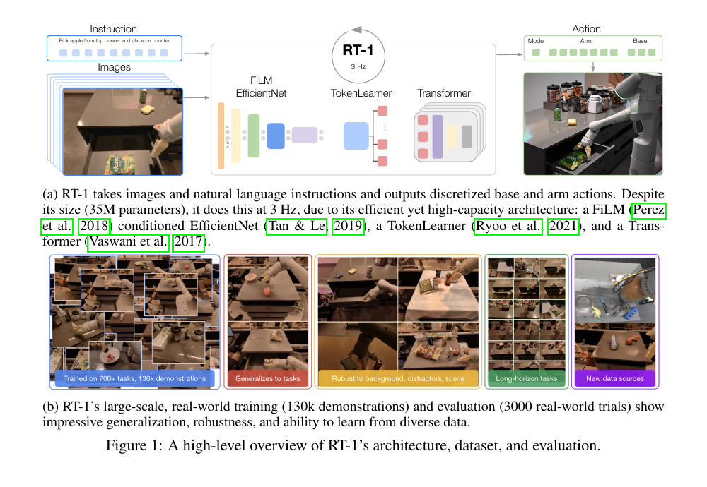
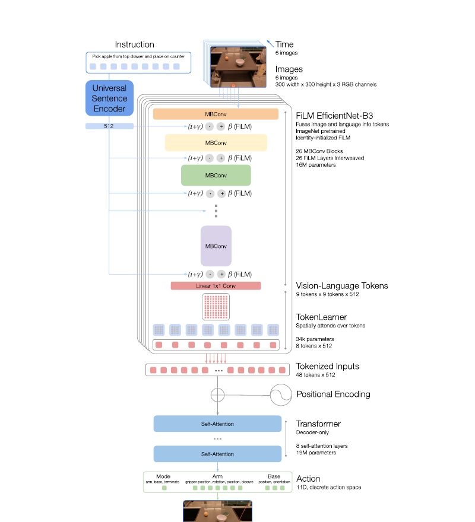

RT-1
Robotics Transformer for Real-World Control at Scale.
RT-1은 다양한 실제 로봇 시연을 하나의 Transformer policy에 모아, 언어 지시와 카메라 이미지를 로봇 행동으로 직접 변환한 초기 대규모 범용 로봇 정책이다. 이후 RT-2와 Gemini Robotics로 이어지는 Google DeepMind Robotics 계보의 출발점이다.
Thesis
핵심 질문: 로봇도 큰 데이터로 일반화할 수 있는가?
당시의 로봇 imitation learning은 보통 특정 작업에 맞춘 데이터를 모아 단일 정책을 학습했다. RT-1은 반대로, 서로 연결된 다양한 작업·물체·환경의 데이터를 한 모델에 넣으면 새 조합과 낯선 환경에서도 더 잘 동작할 수 있다고 본다.
Scale real-world data
13대의 로봇이 17개월 동안 수집한 약 130,000개 demonstration과 700개 이상의 언어 지시를 사용한다.
Compact Transformer control
고해상도 이미지와 언어를 compact token으로 압축해 Transformer가 3 Hz closed-loop control을 수행하도록 설계한다.
Compositional generalization
학습에 없던 작업 조합, 물체, 배경, distractor에 대한 일반화를 실제 로봇 실험으로 평가한다.
Data
한 작업이 아니라, 연결된 작업들의 집합
데이터는 사무실 주방 환경의 mobile manipulator에서 수집했다. 지시는 pick, place, drawer open/close처럼 skill과 object를 조합한 형태다. 예를 들어 모델은 “pick apple”, “place water bottle upright”처럼 언어로 지정된 서로 다른 조작을 같은 policy에서 학습한다.
13 robots · 17 months · 130k episodes
대규모 수집 자체가 RT-1의 중요한 기여다. 데이터 양뿐 아니라 여러 물체와 장면을 함께 포함해야 일반화가 가능하다고 주장한다.
700+ language instructions
명령의 동사와 명사를 분리해 볼 수 있는 데이터 구성이므로, 학습 중 보지 못한 action–object 조합을 테스트할 수 있다.
Behavior cloning
성공 demonstration의 행동 likelihood를 최대화하는 supervised imitation learning으로 policy를 학습한다.
System Overview
실시간 제어를 위해 설계를 압축하다
RT-1은 foundation VLM이 아니라, 이미지·언어·로봇 제어를 하나의 Transformer sequence model에 맞춘 효율적 policy architecture다. 핵심은 대규모 실제 로봇 데이터를 흡수하면서도 3 Hz closed-loop control을 유지할 수 있도록 입력 표현을 압축하는 데 있다.

Language-conditioned visual encoder
Universal Sentence Encoder로 지시를 embedding한 뒤, FiLM으로 ImageNet-pretrained EfficientNet-B3를 조건부 조절한다. 그래서 이미지 encoder가 처음부터 작업 관련 특징을 보게 한다.
TokenLearner compression
이미지 한 장에서 나온 81개 vision-language token을 8개로 압축한다. 6-frame history는 Transformer에 총 48 token으로 전달된다.
Decoder-only Transformer
8-layer, 약 19M parameter Transformer가 압축된 token sequence를 보고 다음 로봇 행동 token을 예측한다. 전체 모델 크기는 약 35M parameter다.
Model Architecture
모델 안에서 token은 어떻게 흐르는가?
RT-1은 언어를 단순히 Transformer의 뒤쪽에 붙이지 않는다. 언어 지시가 image encoder의 FiLM layer를 조건부 조절해, 시각 특징을 추출하는 첫 단계부터 현재 작업에 필요한 정보에 집중하게 만든다.

Instruction → Universal Sentence Encoder
자연어 지시를 512차원 embedding으로 바꾼다. 이 embedding은 직접 action을 생성하기보다, 뒤의 visual encoder를 task-conditioned하게 만드는 신호로 쓰인다.
6 images + FiLM EfficientNet-B3 → 81 tokens per image
최근 6장의 300×300 RGB 이미지를 처리한다. ImageNet 사전학습 EfficientNet-B3의 중간 layer에 identity-initialized FiLM을 넣어, 기존 시각 표현을 깨뜨리지 않으면서 지시에 맞게 조절한다.
TokenLearner → 8 tokens per image
81개 spatial token 가운데 중요한 조합을 학습해 8개로 줄인다. 6-frame history는 48 token이 되어, Transformer의 attention 비용과 추론 지연을 낮춘다.
Decoder-only Transformer → action tokens
8 self-attention layer, 약 19M parameter Transformer가 tokenized input을 받아 arm·base·mode action을 예측한다. action은 각 dimension별 256개 bin의 categorical distribution으로 출력한다.
Action Representation
행동을 연속값이 아니라 256개 bin의 token으로 출력한다
RT-1은 각 action dimension을 균등한 256개 bin으로 discretize하고, categorical cross-entropy로 학습한다. 이것이 RT-2가 VLM의 text token 공간에 action을 넣는 발상으로 확장되기 전의 형태다.
Arm: 7 dimensions
End-effector의 x, y, z 이동과 roll, pitch, yaw 회전, gripper opening을 제어한다.
Base: 3 dimensions
Mobile base의 x, y, yaw 이동을 제어한다.
Mode: arm / base / terminate
현재 arm을 움직일지, base를 움직일지, episode를 끝낼지 결정하는 별도 이산 action이다.
Results
무엇을 보여주었나?
RT-1은 학습 지시에 대해 97% 성공률을 보고했고, 비교 모델 대비 새 task·distractor·background에서 각각 25%, 36%, 18% 높은 일반화 성능을 보였다. 또한 simulation과 다른 robot type의 데이터를 섞는 실험을 통해 heterogeneous data가 원래 작업 성능을 크게 해치지 않으면서 일반화를 보완할 수 있음을 보였다.
Out-of-distribution robustness
학습하지 않은 물체, 배경 변화, 방해 물체가 있는 상황에서 정책이 얼마나 유지되는지 실제 로봇으로 측정한다.
Long-horizon execution
SayCan의 high-level planning과 결합해 최대 50 stage의 긴 작업을 수행할 수 있음을 보인다. RT-1은 그 안에서 저수준 skill executor 역할을 맡는다.
Scale matters
데이터 양·다양성·모델 용량을 함께 키우는 것이 핵심이며, 어느 하나만 늘리는 것만으로는 같은 일반화 효과를 얻기 어렵다는 것이 논문의 결론이다.
Position in the VLA Lineage
RT-2와 π0를 이해하기 위한 기준점
Large-scale language-conditioned robot policy
압축된 image-language token을 Transformer가 받아 이산 행동을 출력한다. 일반화의 중심은 실제 로봇 데이터의 scale과 diversity다.
Web knowledge enters robot control
사전학습 VLM을 robot action prediction으로 co-fine-tune하며 VLA라는 흐름을 명확히 만든다.
Continuous, high-frequency action generation
행동 token의 한계를 줄이기 위해 flow matching으로 연속 action chunk를 만든다.
원문: RT-1: Robotics Transformer for Real-World Control at Scale ↗